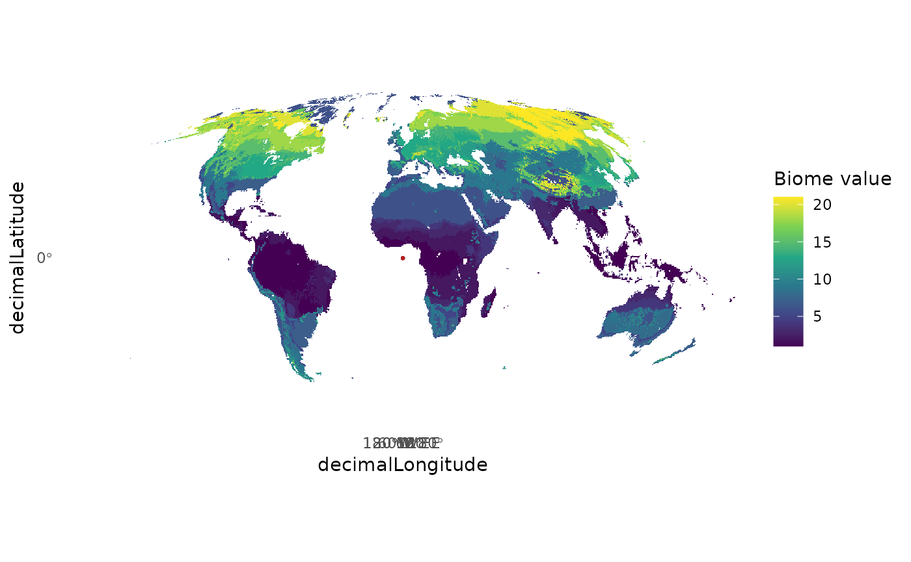

Publication-level maps
publicaiton_level_map.Rmd
library(biomes)
#> Loading required package: terra
#> terra 1.9.27
library(ggplot2)
library(terra)
library(tidyterra)
#>
#> Attaching package: 'tidyterra'
#> The following object is masked from 'package:stats':
#>
#> filterPublication-quality maps of occurrences over biomes
Combine a biome raster with your occurrence points to produce a
publication-ready map. Below we use layer 1 (Allen et al., 2020) as the
background and overlay the biomes_example dataset.
data(biomes_example)
layers <- biomes_get()
biome <- layers[[1]]
ggplot() +
geom_spatraster(data = biome) +
scale_fill_viridis_c(name = "Biome value", na.value = "white") +
geom_point(data = biomes_example,
aes(x = decimalLongitude,
y = decimalLatitude),
color = "firebrick",
size = 0.4,
alpha = 0.5) +
coord_sf(expand = FALSE) +
theme_minimal() +
theme(panel.grid = element_blank())
#> <SpatRaster> resampled to 5e+05 cells.
To save the figure at publication resolution:
ggsave("biome_map.png", width = 8, height = 4, dpi = 300)